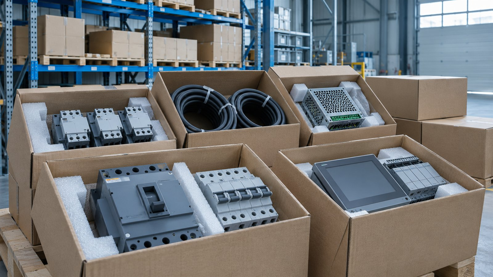

Пример · данные условные
Матрица соответствия / пример
| Требование | Документ | Статус |
|---|---|---|
| Характеристики | Паспорт изделия | Сопоставлено |
| Срок поставки | Письмо завода | Запросить |
| Комплектность | Опись заявки | Проверить |
Поставка электротехнического оборудования / кейс-концепт
Переводим документацию закупки в матрицу требований и комплект заявки.
Посмотреть результатПример · данные условные
| Требование | Документ | Статус |
|---|---|---|
| Характеристики | Паспорт изделия | Сопоставлено |
| Срок поставки | Письмо завода | Запросить |
| Комплектность | Опись заявки | Проверить |
Условный поставщик нашёл закупку подходящего оборудования. До решения об участии нужно понять, соответствует ли товар требованиям, какие документы потребуются и выполнимы ли сроки поставки. Пропущенное условие может оказаться важнее привлекательной цены.
Показываем последовательность работы на условном проекте.
Собрали требования к товару, участнику, срокам и комплекту документов.
Сопоставили характеристики предложения с каждой строкой задания.
Составили заявку и реестр приложений, отдельно отметили неподтверждённые сведения.
Проверили комплектность и передали заказчику список финальных действий. Подаёт уполномоченный участник.

В этом сценарии заказчик получает:
Учебный фрагмент без ссылки на реальную закупку. Победу и допуск не обещаем; окончательная проверка проводится по конкретной документации.
Пример · данные условные
| Требование | Документ | Статус |
|---|---|---|
| Характеристики | Паспорт изделия | Сопоставлено |
| Срок поставки | Письмо завода | Запросить |
| Комплектность | Опись заявки | Проверить |
10 000 ₽
Ориентир из прайса. Итоговый объём и стоимость согласуем по исходным данным.
По согласованию с учётом срока подачи
Срок считаем после получения согласованного комплекта данных. Ожидание внешних ответов обсуждаем отдельно.
Подготовьте исходные документы и желаемый результат.
Форма на сайте студии работает в демонстрационном режиме.